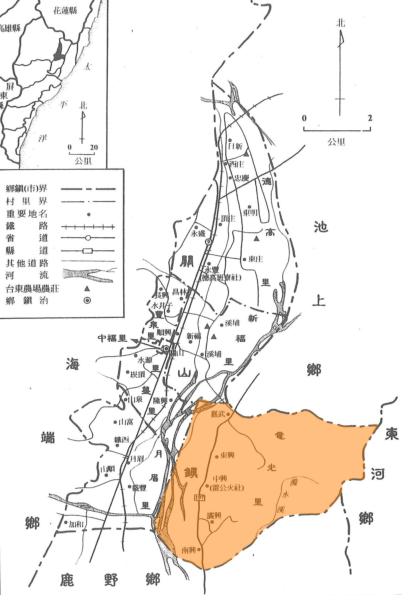
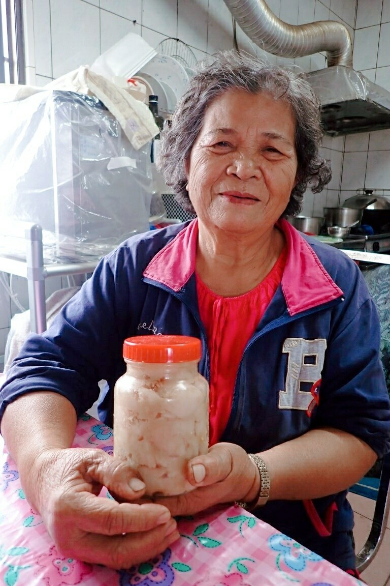
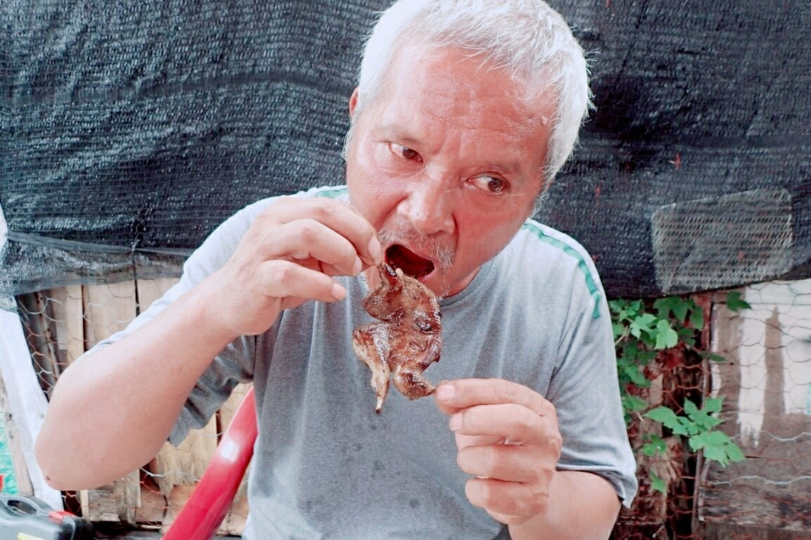
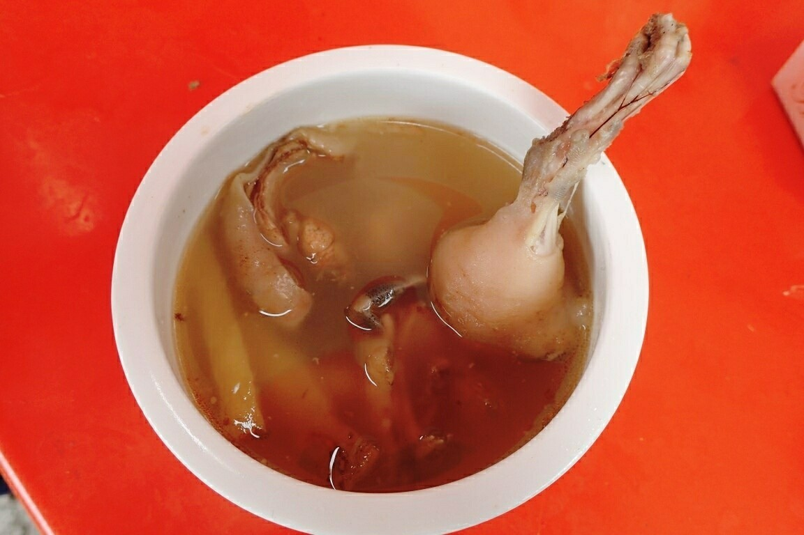
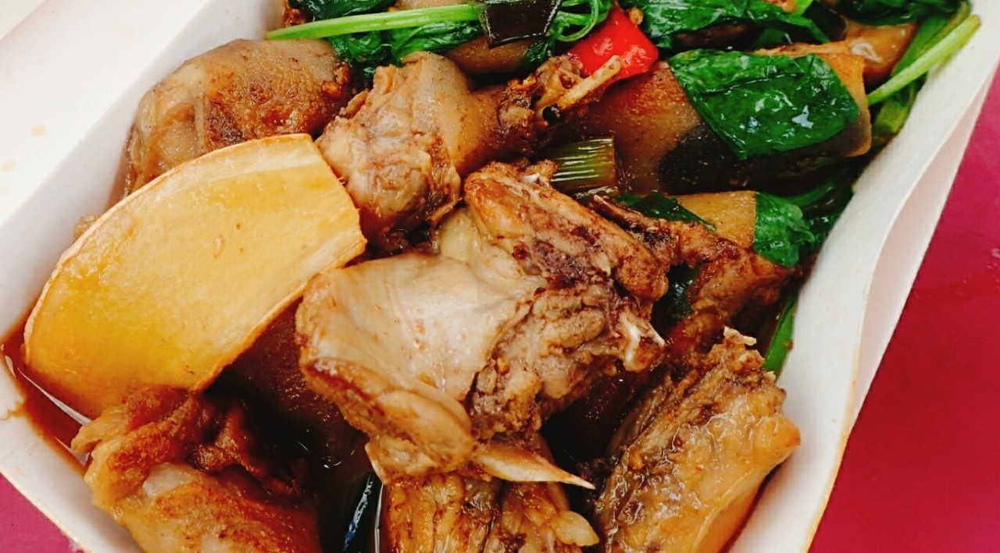
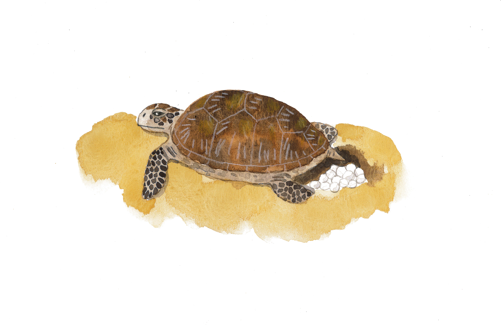
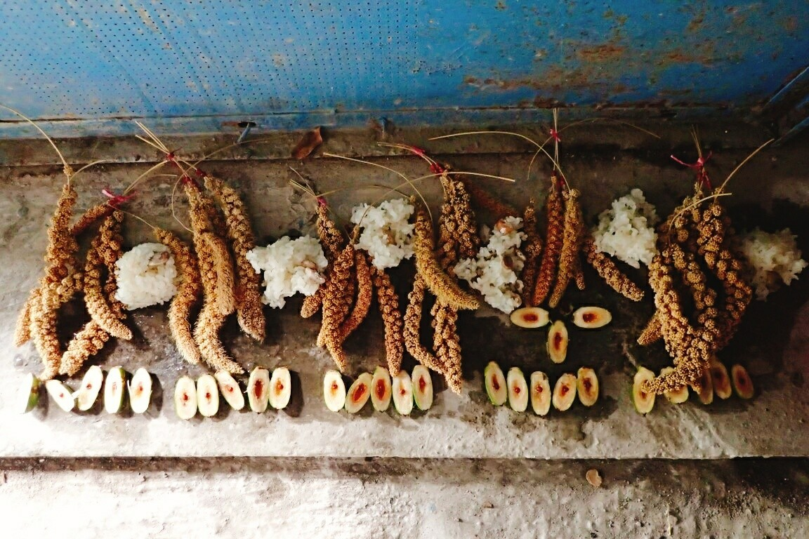

- 檢索條件：
-
- 關鍵字：財團法人東台灣研究會文化藝術基金會
- 每頁180筆
- 排序查詢：相似度高→低
- 查詢模式：一字不差(精確搜尋)
- 語言轉換：繁簡對譯
- 清除全部
進階篩選
-
黃學堂主撰的著作：《大原風情：鹿野鄉．瑞源、瑞隆、瑞豐、瑞和》
-
Kaadaadaan(電光)部落地名分布地圖
-
kaadaadaan(電光)部落食材原地_卑南溪
-
kaadaadaan(電光)部落食材原地_酒麴植物田圃
-
kaadaadaan(電光)部落食材原地_木薯田
-
 kaadaadaan(電光)部落食材原地_淺山採集區_傳統地名 Ciru.itan
kaadaadaan(電光)部落食材原地_淺山採集區_傳統地名 Ciru.itan -
 Kaadaadaan部落飲食文化記憶小旅行路線
Kaadaadaan部落飲食文化記憶小旅行路線 -
 kaadaadaan(電光)部落食材原地_湧泉採集damay(水綿)_傳統地名Citemangan
kaadaadaan(電光)部落食材原地_湧泉採集damay(水綿)_傳統地名Citemangan -
kaadaadaan(電光)部落食材原地_構樹雄花
-
kaadaadaan(電光)部落食材原地_從聚落豬圈到關山鎮市場
-
Kaadaadaan(電光)部落溪流環境與傳統地名地圖
-
Kaadaadaan(電光)部落淺山環境與傳統地名地圖
-
1950-1980年代Kasavakan部落食材記憶地圖
-
Kasavakan部落地名分布地圖
-
 1950-1980年代Kasavakan部落海岸區環境地圖
1950-1980年代Kasavakan部落海岸區環境地圖 -
 1950-1980年代Kasavakan部落平原區環境地圖
1950-1980年代Kasavakan部落平原區環境地圖 -
1950-1980年代Kasavakan部落深山區環境地圖
-
1950-1980年代Kasavakan部落聚落區環境地圖
-
1950-1980年代Kasavakan部落溪流區環境地圖
-
1950-1980年代Kasavakan部落淺山區環境地圖
-
 Kasavakan(射馬干)部落早期魚藤栽植區_傳統地名Dilis
Kasavakan(射馬干)部落早期魚藤栽植區_傳統地名Dilis -
Kasavakan部落海岸空間傳說_祖先發祥地「Ruvuwa’an」
-
Kasavakan部落食材原地_水田區_傳統地名Vacu’ecu
-
Kasavakan部落食材原地_旱作作物區_傳統地名Sinalikidan
-
 Kasavakan部落食材原地_知本溪_傳統地名dinanuman i ’eving
Kasavakan部落食材原地_知本溪_傳統地名dinanuman i ’eving -
Kasavakan部落食材原地_水田區_傳統地名Samuni'
-
 Kasavakan部落食材原地_漁撈區_傳統地名Kanaluvang
Kasavakan部落食材原地_漁撈區_傳統地名Kanaluvang -
Kasavakan部落食材原地_旱地田區_傳統地名Ta’ilrang
-
Kasavakan部落食材原地_傳統地名Cevecevelran
-
 Kasavakan部落食材原地_獵區_傳統地名Tevtevan
Kasavakan部落食材原地_獵區_傳統地名Tevtevan -
Kasavakan部落食材原地_pulriyungan豬圈
-
Kasavakan部落食材原地_小米田_傳統地名Cepur
-
再現傳統飲食記憶者_Kasavakan部落高玉春
-
再現傳統飲食記憶者_Kasavakan部落林賢美
-
再現傳統飲食記憶者_Kasavakan部落陳玉華
-
再現傳統飲食記憶者_Kasavakan部落曾玉鳳
-
再現傳統飲食記憶者_Kasavakan部落陳正明
-
 再現傳統飲食記憶者_Kasavakan部落謝鴻章
再現傳統飲食記憶者_Kasavakan部落謝鴻章 -
再現傳統飲食記憶者_Kasavakan部落古阿花
-
再現傳統飲食記憶者_Kasavakan部落古金木
-
再現傳統飲食記憶者_Kasavakan部落古金全
-
再現傳統飲食記憶者_Kasavakan部落謝宏春
-
再現傳統飲食記憶者_Kasavakan部落謝運妹
-
 Kasavakan部落再現早期捕法紀實_登田鼠
Kasavakan部落再現早期捕法紀實_登田鼠 -
Kasavakan部落再現傳統漁法紀實_padawak(魚藤捕魚)
-
Kasavaka部落食材捕撈紀實_浪花蟹visvis
-
Kasavakan部落獵具製作紀實_鳥踏陷阱
-
Kasavakan部落陷阱製作紀實_吊腳陷阱
-
Kasavakan部落食材處理紀實_山豬
-
 Kasavakan部落飲食文化記憶田野工作坊_傳統漁撈活動
Kasavakan部落飲食文化記憶田野工作坊_傳統漁撈活動 -
 Kasavakan部落原味記憶練習式_浪花蟹
Kasavakan部落原味記憶練習式_浪花蟹 -
 Kasavakan部落傳統煮具_蒸飯桶lidingan
Kasavakan部落傳統煮具_蒸飯桶lidingan -
Kasavakan部落傳統飲食記憶_味噌醃肉linungun
-
Kasavakan部落傳統飲食記憶_木薯湯圓pinalaulr da kisaba
-
Kasavakan部落傳統飲食記憶_蝸牛野菜湯siyaw a dindin
-
Kasavakan部落傳統飲食記憶_冰鎮酸辣湯vinaleng
-
Kasavakan部落傳統飲食記憶_烤鵪鶉kinelang a dademeng
-
Kasavakan部落傳統飲食記憶_山豬肉vavuy
-
Kasavakan部落傳統飲食記憶_糯米飯kinavulas
-
Kasavakan部落傳統飲食記憶_燒酒鼠kisiw a ’avutar
-
Kasavakan部落傳統飲食記憶_刺蔥溪魚湯 siyaw a pinuwayan de tana’na cuk
-
 Kasavakan部落傳統飲食記憶_浪花蟹visvis
Kasavakan部落傳統飲食記憶_浪花蟹visvis -
Kasavakan早期漁具_玻璃水鏡pa’alruwangan
-
Kasavakan部落傳統漁具_魚叉tatusuk
-
Kasavakan部落傳統漁具_蝦簍surunung
-
Kasavakan部落獵具_田鼠pecir
-
Kasavakan部落早期漁具_誘捕visvis(浪花蟹)工具
-
Kasavakan部落早期漁具_八卦網
-
Kasavakan部落早期漁具_三角網savang
-
Kasavakan部落早期煮具_釜鍋siwi
-
Kasavakan部落傳統獵具_鳥踏pecir
-
Kasavakan部落傳統飲食記憶_小米搖搖飯ciniyuciyur
-
 Kasavakan部落傳統食譜_糯米飯kinavulas
Kasavakan部落傳統食譜_糯米飯kinavulas -
Kasavakan部落傳統飲食相關祭儀_稻米dimilar(稻米嚐新祭)
-
 Kasavakan傳統飲食相關祭儀_pu'alising(分享食物)
Kasavakan傳統飲食相關祭儀_pu'alising(分享食物) -
Kasavakan部落傳統食材糯米_應用_avay
-
Kasavakan部落傳統飲食相關祭儀_lemawa(分享祖先儀式)
-
Kasavakan部落傳統飲食相關祭儀_kivalivaliya
-
 Kasavakan部落傳統食材糯米_應用_血桐粽tinulre’eva
Kasavakan部落傳統食材糯米_應用_血桐粽tinulre’eva -
Kasavakan部落傳統食材糯米_應用_麻糬tinugerl
-
Kasavakan部落傳統食材糯米_應用_糯米酒
-
Kasavakan(射馬干)部落糯米食材應用_香蕉飯
-
Kasavakan部落傳統食材_雨來菇nugunum
-
Kasavakan部落傳統食材_田螺sanli
-
 Kasavakan部落傳統食材_青蛙gagiyas
Kasavakan部落傳統食材_青蛙gagiyas -
Kasavakan部落傳統食材_牛睪丸
-
 Kasavakan部落動植物文化傳說_田螺的故事
Kasavakan部落動植物文化傳說_田螺的故事 -
.jpg) Kasavakan動植物文化傳說_會耕田的狗
Kasavakan動植物文化傳說_會耕田的狗 -
 Kasavakan部落傳統食譜_木薯湯圓pinalaulr da kisaba
Kasavakan部落傳統食譜_木薯湯圓pinalaulr da kisaba -
Kasavakan部落傳統食材木薯_應用_包餡湯圓
-
Kasavakan部落傳統食材木薯_應用_木薯粉
-
Kasavakan部落傳統食材_野生黑木耳
-
Kasavakan部落傳統食材芋頭梗_應用_酒釀芋頭梗
-
 Kasavakan部落傳統食譜_刺蔥溪魚湯
Kasavakan部落傳統食譜_刺蔥溪魚湯 -
Kasavakan部落傳統漁撈植物運用_臺灣魚藤
-
Kasavakan部落傳統食材溪流魚種_應用_涼拌小魚
-
Kasavakan部落傳統食材溪流魚種_應用_醃魚
-
Kasavakan部落傳統食材_毛蟹
-
Kasavakan部落傳統飲食相關祭儀_祈雨祭
-
Kasavakan部落傳統飲食相關祭儀_祭山水神
-
Kasavakan部落傳統飲食相關祭儀_semasap
-
Kasavakan部落動植物文化傳說_禮讓蝦子回家
-
Kasavakan部落傳統食譜_燒酒鼠kisiw a ’avutar
-
Kasavakan部落登田鼠傳統知識
-
Kasavakan部落傳統食材田鼠_應用_三杯
-
Kasavakan部落傳統食材_藥草kisiw
-
Kasavakan部落傳統食譜_浪花蟹visvis
-
Kasavakan部落傳統食材_semaning
-
Kasavakan部落昔日傳統食材_海龜蛋
-
 Kasavakan部落傳統飲食相關祭儀_發祥地祭祖
Kasavakan部落傳統飲食相關祭儀_發祥地祭祖 -
 Kasavakan部落動植物文化傳說_女孩變魚
Kasavakan部落動植物文化傳說_女孩變魚 -
Kasavakan部落傳統食譜_冰鎮酸辣湯vinaleng
-
Kasavakan部落傳統食材_青芒果
-
Kasavakan部落傳統食材_雞心辣椒
-
Kasavakan部落傳統食材竹筍_應用_破布子筍塊
-
Kasavakan部落傳統食材_野菜類
-
Kasavakan部落傳統食材_珠蔥(kenaw)、蕗蕎(rakk)
-
Kasavakan部落傳統食譜_蝸牛野菜湯siyaw a dindin
-
Kasavakan部落傳統食材蝸牛_應用_烤蝸牛
-
Kasavakan部落傳統食材蝸牛_應用_三杯螺肉
-
 Kasavakan部落傳統食材_蝸牛卵
Kasavakan部落傳統食材_蝸牛卵 -
Kasavakan部落傳統食材_蟲類
-
Kasavakan部落傳統食材蝸牛_處理法_木灰清理
-
Kasavakan部落傳統食譜_烤鵪鶉kinelang a dademeng
-
Kasavakan部落捕鳥傳統知識
-
Kasavakan部落昔日傳統食材_紅尾伯勞
-
Kasavakan部落昔日食材_環頸雉(tuu’)
-
Kasavakan部落動植物文化傳說_一個女孩的故事
-
Kasavakan部落動植物文化傳說_兄弟變鳥
-
Kasavakan部落動植物文化傳說_怪鳥Dakadakaw
-
Kasavakan部落傳統食材山肉_應用_三杯山肉
-
Kasavakan部落傳統食材_藤心
-
Kasavakan部落傳統食譜_山豬肉vavuy
-
Kasavakan部落傳統食材山肉_應用_燻肉
-
Kasavakan部落傳統食材_刺蔥籽
-
Kasavakan部落傳統食材_臺灣圓葉胡椒(lumumu)
-
Kasavakan部落狩獵文化與禁忌
-
Kasavakan部落傳統飲食相關祭儀_獵前祭祀
-
Kasavakan部落傳統飲食相關祭儀_祭祀回饋儀式(vavulias)
-
Kasavakan部落傳統飲食相關祭儀_少年祭mangayangayaw
-
Kasavakan部落傳統飲食相關祭儀_大獵祭(mangayaw)
-
 Kasavakan部落動植物文化傳說_神鹿與公主
Kasavakan部落動植物文化傳說_神鹿與公主 -
Kasavakan部落傳統食譜_味噌醃肉linungun
-
 Kasavakan部落傳統食材醃肉_應用_芋頭粉味噌醃肉
Kasavakan部落傳統食材醃肉_應用_芋頭粉味噌醃肉 -
Kasavakan部落傳統食材小米_應用_小米月子粥cinapa
-
Kasavakan部落傳統食材豬_應用_血腸(inaruway)
-
Kasavakan部落傳統食材豬_應用_豬血湯
-
Kasavakan部落傳統食材豬肉_應用_豬肉乾
-
Kasavakan部落傳統食材豬_應用_豬睪丸
-
Kasavakan部落傳統食譜_小米搖搖飯ciniyuciyur
-
Kasavakan部落傳統食材小米_栽種過程(一)：整地
-
Kasavakan部落傳統食材小米_栽種過程(二)：播種(temhus)
-
Kasavakan部落傳統食材小米_栽種過程(三)：除草疏苗
-
Kasavakan部落傳統食材小米_栽種過程(四)：misa’ur(除草完工祭)
-
Kasavakan部落傳統食材小米_栽種過程(五)：趕鳥
-
Kasavakan部落傳統食材小米_栽種過程(六)：採收
-
Kasavakan部落傳統食材小米_處理法_脫殼脫粒
-
Kasavakan部落傳統食材小米_應用_avay(小米糕)
-
Kasavakan部落傳統食材小米_應用_釀酒
-
Kasavakan部落傳統食材_小萊豆、樹豆
-
Kasavakan部落傳統食材小米_收穫祭儀_dimilar’(小米嚐新祭)
-
Kasavakan部落傳統飲食相關祭儀_Kemaderunan(夏祭)
-
Kasavakan部落動植物文化傳說_小米的由來
-
Kasavakan部落動植物文化傳說_黑熊與雲豹
-
 《走過尼伯特．香蘭社區的生命故事》
《走過尼伯特．香蘭社區的生命故事》 -
呂賴瑞蘭
-
陳玉蘭
-
蕭惠明
-
詹范瑞英
-
許趂
-
潘好一
-
臺東太麻里新香蘭聚落
-
臺東太麻里舊香蘭聚落
-
臺東太麻里山下聚落
-
臺東太麻里陳玉蘭住宅災後樣貌
-
臺東太麻里蕭惠明村長家災後樣貌
-
臺東太麻里曾金泉住宅災後樣貌
授權聲明